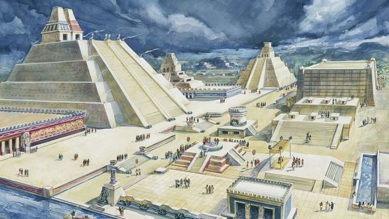

Os astecas eram originalmente um povo seminômade que vivia no norte da América, em Aztlan, na atual Califórnia.
Os historiadores acreditam que a busca por terras férteis os motivaram a peregrinar em direção a terras mais ao sul, até chegarem no lago Texcoco, no Vale do México, durante o Século XII.
Entretanto, existe também o mito de origem do Império Asteca. Segundo esse mito, os astecas, motivados por conflitos com outros povos, começaram a se deslocar para as terras ao sul, até que se depararam com a imagem de uma águia empoleirada em um cacto - símbolo de seu povo - e se alimentando de uma serpente - símbolo do povo maia.
Os astecas teriam acreditado que aquele era um sinal do deus da guerra para que eles se estabelecessem ali. Até hoje a bandeira mexicana tem uma águia como símbolo.
Em 1325, a capital Tenochtitlán é fundada e o Império aumenta seu poder e riqueza, conquistando parte dos territórios antes pertencentes aos maias e toltecas.
Em 1425 o Império chega a seu ápice, dominando territórios do oeste do México até o sul da Guatemala. No Século XVI a capital asteca tinha uma população mais numerosa que a maior capital europeia.
A mitologia asteca era repleta de deuses e deusas, pois a religião deste povo era politeísta. Os astecas costumavam fazer rituais de sacrifícios humanos e de animais para agradar ou acalmar seus deuses. Os deuses tinham forma humana misturada com animais e estavam diretamente ligados às forças da natureza e aos sentimentos humanos.
Este deus asteca era filho de Coatlicue ("a da saia de serpente"). O seu nome significa "O Colibri Azul à Esquerda" e era o deus da guerra, das tempestades e do sol. A sua mãe estava a executar trabalhos sagrados na Montanha da Serpente, perto da cidade de Tula, e quando lhe caiu um tufo de penas de tentilhão em cima ficou à espera de um filho. A sua filha Coiolxauhqui e os seus outros quatrocentos filhos (Centzon- Huitznauhas) revoltaram-se e decidiram reunir um exército para a combater. Mas Huitzipochtli nasceu e cresceu imediatamente, protegendo-se dos pés à cabeça com uma armadura azul. Atacou a sua irmã com um cetro ardente em forma de serpente, cortando-a em pedaços e matou os restantes irmãos. Foi desta maneira que se tornou o chefe dos astecas e lhes forneceu uma série de sinais que indicariam o sítio em que deviam fundar a sua cidade. Este deus costuma ser representado todo azul, com penas de colibri na perna esquerda, com o cetro em forma de serpente e todo armado. Também a águia da coragem o personifica. Eram principalmente os prisioneiros de guerra que se aproveitavam para sacrificar ao deus.
Este deus asteca era filho de Coatlicue ("a da saia de serpente"). O seu nome significa "O Colibri Azul à Esquerda" e era o deus da guerra, das tempestades e do sol. A sua mãe estava a executar trabalhos sagrados na Montanha da Serpente, perto da cidade de Tula, e quando lhe caiu um tufo de penas de tentilhão em cima ficou à espera de um filho. A sua filha Coiolxauhqui e os seus outros quatrocentos filhos (Centzon- Huitznauhas) revoltaram-se e decidiram reunir um exército para a combater. Mas Huitzipochtli nasceu e cresceu imediatamente, protegendo-se dos pés à cabeça com uma armadura azul. Atacou a sua irmã com um cetro ardente em forma de serpente, cortando-a em pedaços e matou os restantes irmãos. Foi desta maneira que se tornou o chefe dos astecas e lhes forneceu uma série de sinais que indicariam o sítio em que deviam fundar a sua cidade.
Este deus costuma ser representado todo azul, com penas de colibri na perna esquerda, com o cetro em forma de serpente e todo armado. Também a águia da coragem o personifica.
Eram principalmente os prisioneiros de guerra que se aproveitavam para sacrificar ao deus.